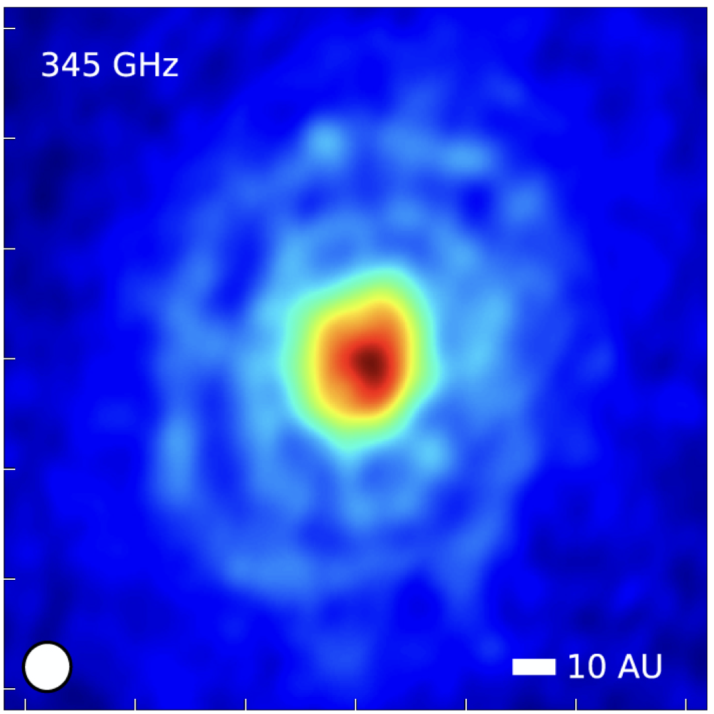
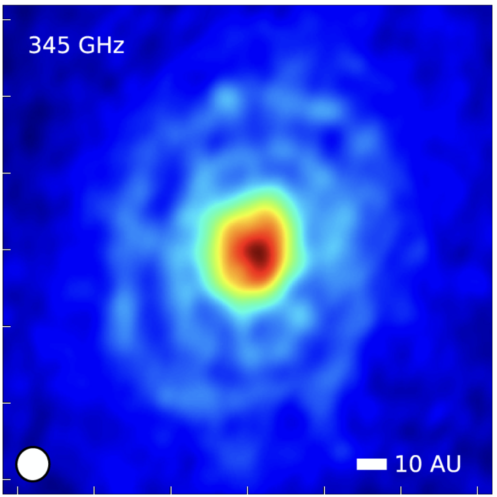

Warping Away Gravitational Instabilities in Protoplanetary Discs
Sahl Rowther, Rebecca Nealon, Farzana Meru
Hover on
 blue text
for more information.
blue text
for more information.
Where are the Gravitationally Unstable Discs?
When discs are young, they are expected to be quite massive.
A characteristic feature of massive discs are large scale
spiral features due to gravitational instabilities. However,
observations of recent protoplanetary discs
 (Andrews et al. 2018
,
(Andrews et al. 2018
,
 Long et al. 2018)
in the last few years have shown that most discs tend to be
axisymmetric, with some also showing ring and gap
structures. Even observations of very young Class 1 discs
such as GY 91

(Sheehan & Eisner 2018)
and IRS 63
Long et al. 2018)
in the last few years have shown that most discs tend to be
axisymmetric, with some also showing ring and gap
structures. Even observations of very young Class 1 discs
such as GY 91

(Sheehan & Eisner 2018)
and IRS 63
 (Segura-Cox et al.
2020)
, both thought to be less than half a million years old,
show rings & gaps.
(Segura-Cox et al.
2020)
, both thought to be less than half a million years old,
show rings & gaps.
Does the lack of observed large scale spiral structures
imply that young discs are not as massive as expected? Or
can signatures of gravitational instabilities be hidden? It
is reasonable to assume that gravitationally unstable discs
do not evolve in isolation. There are many complex processes
that can occur during the self-gravitating phase of the disc
that can warp the disc and alter its evolution. These
include a misaligned internal (planetary or stellar)
companion, a misaligned unbound stellar companion (flyby),
or misaligned infalling material from chaotic accretion
episodes.
Our aim is to investigate whether physical processes such
as warps can hide signatures of gravitational
instability.
Evolution of a Warped Disc
- The disc is first evolved without a warp until the disc is gravitationally stable and in a steady state. We then include an idealised warp to understand the impact of a warp on the disc's evolution.
- As the disc evolves, the warp propagates radially both inwards and outwards.
- Since the warp was introduced numerically, it is not sustained. Thus as the disc continues to evolve, the warp smooths out and the disc becomes coplanar.
- The influence of the warp quickly suppresses the spiral structures yielding an axisymmetric gravitationally stable disc.
Why Does the Disc Become Gravitationally Stable?
The Toomre Q parameter provides us a measure of how gravitationally unstable a disc is. It depends on two parameters, the surface density and sound speed of the disc. Or equivalently, the mass and temperature of the disc. The more massive or colder a disc is, the more gravitationally unstable it is.
Impact of the Warp
- By comparing how the surface density (top), sound speed (middle), and Q (bottom) evolve in Figure 2, we can see why the disc becomes gravitationally stable after the warp has been introduced.
- The surface density profile remains unchanged as the disc evolves.
- However, the increase in sound speed as the disc evolves tells us that the disc has heated up.
- Hence, the disc has been pushed into the gravitationally stable regime due to the disc becoming hotter as seen by the increase in Q.
Why Does the Disc Heat Up?
The PdV work plays an important role in altering the disc's evolution. The divergence of the velocity is directly linked to the PdV work, so we use it as a proxy for the PdV work.
The Impact on the Velocities
-
In the warped region of the disc, adjacent annuli of gas are
misaligned with varying vertical height \(z\). This results in
an
 (oscillating radial pressure
gradient)
as the gas traverses an orbit.
(oscillating radial pressure
gradient)
as the gas traverses an orbit.
- This oscillating radial pressure gradient can trigger a strong response in the radial velocity of the disc (Lodato & Pringle 2007), which heats up the disc. This is especially apparent in the early stages as seen by the large magnitudes of the velocity divergence.
- As the warp dissipates, there is little variance in the pressure gradient. Thus, the magnitude of velocity divergence has greatly decreased as expected leading to less heating from PdV work.